Our story
Every family has its story. Ours starts with a runaway.
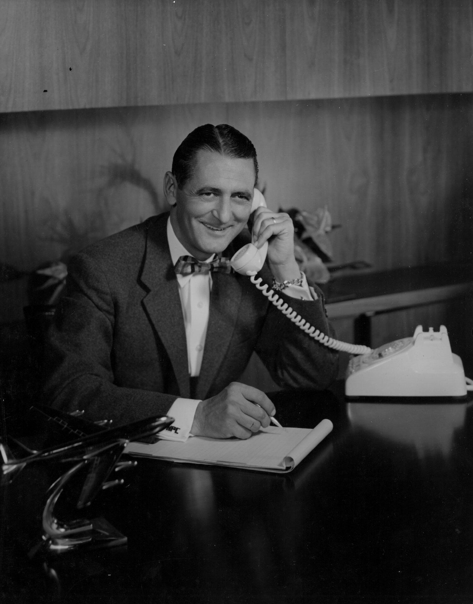
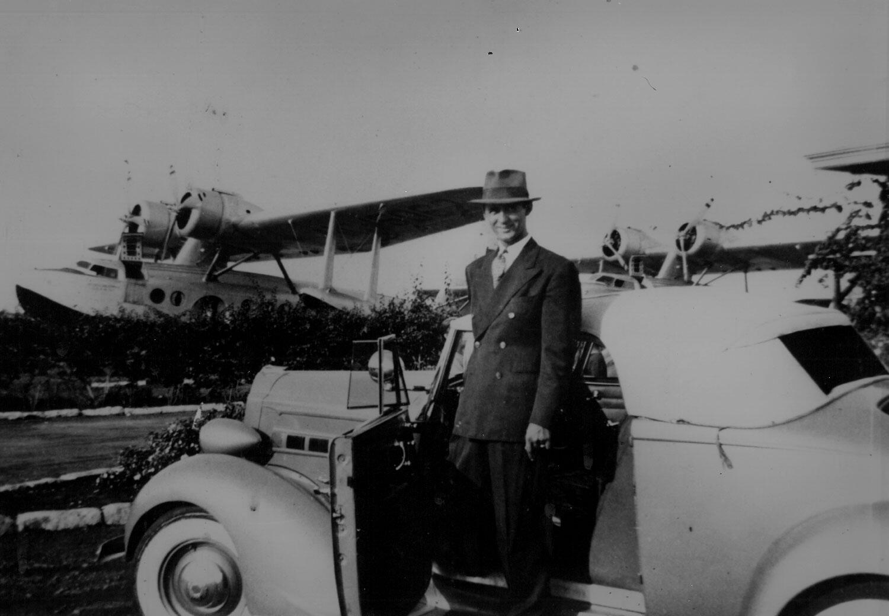
Words by Mark Canlis
Family lore has it that as a very young man, Nicholas Kanlis swam five miles from the island of Lesvos, Greece to the shores of Turkey. Then he hitchhiked his way to the Mena House Hotel in Cairo where he met Teddy Roosevelt and signed on as a cook for the Smithsonian–Roosevelt African Expedition. For more than a year they traveled the rural Africa together, collecting 1100 specimens that would find their way back to the Smithsonian Institute. Eventually, Nick would reach American shores, clearing immigration with an Egyptian passport and settling down in Stockton, California.
Along the way he met our great grandmother, an immigrant herself--a Lebanese beauty--and the most talented cook our dad claims to have ever met. Together, they opened the first-generation Canlis restaurant in 1910. It was a mom and pop shop from the old world. A family cafe they named The Food Palace and Fish Grotto. It was heart and sweat and hope. The untamed west and the streets of Stockton, two honest, immigrant parents and "The Palace" raised our grandfather. His name was Peter Canlis.
In 1939, Peter left the family and its restaurant and struck out on his own. Maybe he was keeping in his father's tradition. A few who knew him said he had something to prove--a vision too grand for his family's small cafe to bear. With the untested confidence of youth and a first-generation immigrant chip on his shoulder, he left to make a name for himself in Hawaii. It was then a place of passenger ships and Pan-American Airways, royal palaces and rows of palms on underdeveloped beaches. This paradise was full of promise. And war.
On December 7, 1941 Peter watched Imperial Japanese aircraft raid Wheeler Field. As a reeling nation lurched into action, the people of Honolulu, and our grandfather, put Pearl Harbor back together. To better support its troops, America formed the United Services Organization in 1941, and hired a young kid from Stockton who had a lot to prove to run one of the busiest kitchens in the Pacific. He won the job with a challenge that he could outcook anyone on the base, and within a few months a surging war and word of mouth saw the USO preparing 3,500 meals a day. Peter Canlis, who'd run away from the restaurant business, quickly showed the island that the best meal in Hawaii was at the USO.
After the war, Peter opened his first restaurant, The Broiler, on a little-known beach called Waikiki. Humble in size (and signage...it hung from a palm tree) the restaurant hired Japanese women for the traditionally-male role of server captain. It was 1947. As best we know, these women changed the future of American fine dining. It was a social experiment ahead of its time. The Broiler exchanged European pretension for humility, hubris for Japanese warmth and hospitality. Gone were the tuxedos and traditional captain-style service. The Broiler, with firsts like tip-pools and team-style service, and cuisine that celebrated European and Eastern techniques was not just an immediate success, but nothing less than a recipe for the future of American dining.
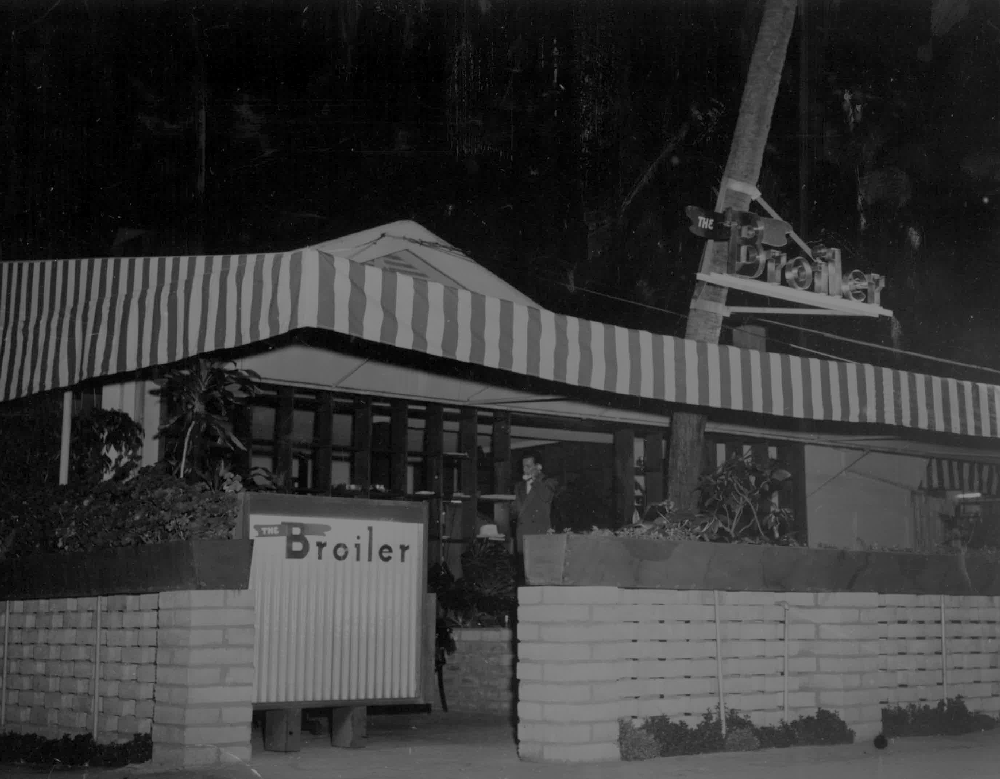
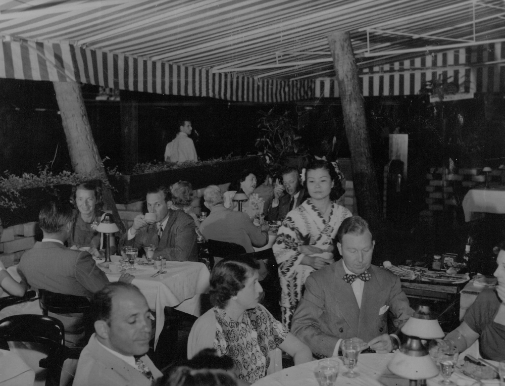
In 1950, Peter Canlis moved to Seattle and opened the restaurant that would make his mark on the nation's emerging fine dining scene. Borrowing all he could (fifty thousand dollars) he sought to build a restaurant in the heart of the city, but as an outsider he could not break in. Unknown, untrusted, and with "an idea so crazy that Seattle would never go for it" Peter fought to find his start. Famed restaurateur Walter Clark took an interest in the newcomer and offered a piece of land "way outside the city." Even as young kids we could recite his answer: "If it's within a dollar's cab ride of downtown, they'll come."
Peter drew from what he could: his mother's recipes, the beauty and grace of Japanese hospitality, the intoxication of Polynesian cuisine, the soul-warming embrace of the Hawaiian people. His impossibly lofty strategy was to build the most beautiful restaurant in the world. Eschewing the style of the great dining rooms in New York and Chicago, Peter hired then-undiscovered residential architect Roland Terry to build a restaurant that felt like a home. He bet on upstart Northwest artists (George Tsutakawa's first sculpture is still our door handle). He snuck fresh fish from Hawaii on Pan Am flights and returned the same suitcases to The Broiler with salmon and Dungeness crab. He built his lounge around a piano and the first post-prohibition liquor license in the city and priced his menu twice as high as the nearest competitor. Then he invited kings and heads of state, business tycoons and civic leaders. He invited them before ever earning the right to. His experiment in Hawaii had worked and in Seattle he would double down on it. Finally, waiting to serve a city of skeptics and naysayers, was his team of women of Japanese descent who had recently endured internment, clad in their own stunning kimonos. Seattle fell for the restaurant and overnight, Europe's 200-year, influential grip on American fine dining was under legitimate siege.
In the years to follow, three more restaurants were built. Returning to Hawaii with funds and reputation to spare, The Broiler was replaced with the island's most iconic and storied restaurant, Canlis Honolulu. In San Francisco, he insisted The Fairmont rebuild the first floor to include Canlis' iconic stone and windows. At the time, it was the most expensive restaurant ever built in America. In Portland, Baron Hilton asked him to build on top of his newest hotel, and then made deals for half a dozen more.
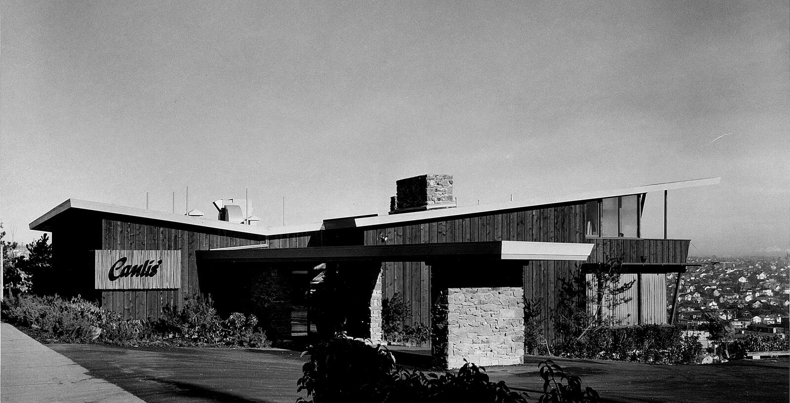


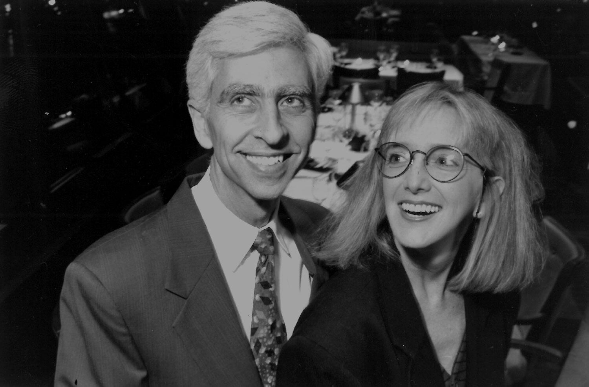
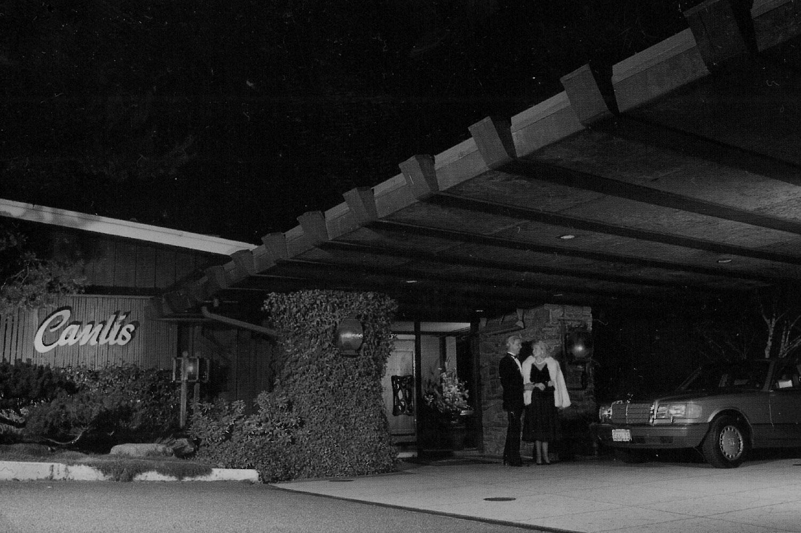
In 1977, we moved to Seattle. I was three. That was the year my younger brother was born. The year Peter asked our father to take over the company. The year he eventually died of cancer. In 1977 the soul of our company passed away with its founder. And in its place a new soul was reborn. Wary of the repercussions of restaurant life on a family, mom and dad were reluctant restaurateurs. Our board of directors even advised they sell the company before ruining its value. Peter Canlis they were not. Seattle, the board, and everyone knew it...and this likely saved our company.
Our parents would shepherd Canlis restaurant for 30 years, choosing family first at every turn in the road. They shrank the business to focus on their marriage and their children. They elevated the brand in the face of new competition and a rapidly evolving industry. They won awards, helped build a city, influenced a nation, raised a family and stayed married to one another. They also practiced a kind of hospitality that would transcend the restaurant business. Hospitality, they'd say, is more than caring for someone. It's a certain kind of turning towards "the other." The stranger. The foreigner. The one who is different. It's the act of carving out space for someone you may not understand, who may not look like you, for no other reason, no personal gain except the singular fulfillment gained from following a belief to its end: We fundamentally need one another, and we were made for relationship.
Hospitality was not so much a business for our parents as it was a natural response to the inevitable moment they came face to face with another human being. They taught us that carving out space for one another would likely be hard but worth it. That it was a form of generosity: a power and wealth that everyone had equal access and right to. A function of one's character, not their circumstances.
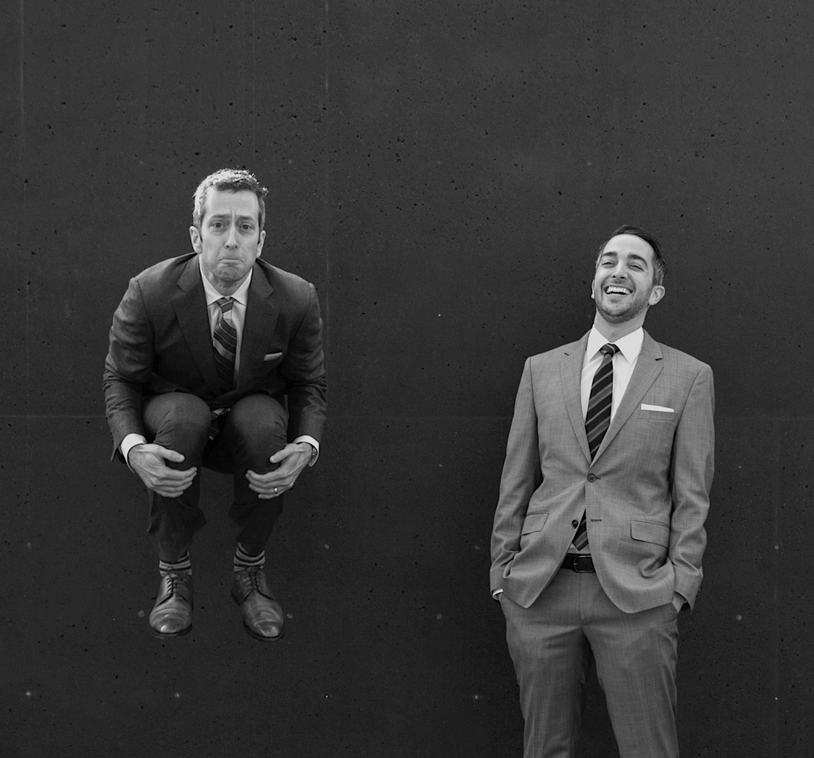
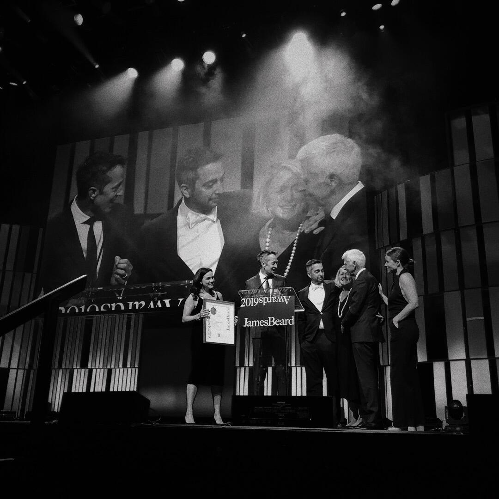
In 2007, my brother and I officially took over the company. We took it from a Greek runaway come to America to find a new home. We took it from a restaurant visionary who staked it all to make a name for his family. We took it from the loving arms of our parents who breathed life into the world around them.
We took it, and it was like, "oh no...now what?"
Since then we've worked towards one goal: to live out and grow the idea that more often than not, it's worth putting other people first. We've sought to understand what turning towards one another really looks like and in so doing, see if our restaurant would stand the test of time. It has endured three generations, seven decades, and now a worldwide pandemic. In truth though, there's not been enough time to know one way or the other. Food & Wine Magazine once called Canlis "one of the 40 most important restaurants in the past 40 years." We've humbly received 22 consecutive Wine Spectator Grand Awards. We've been nominated for 15 James Beard Awards and we've won three of them.
Once, this guest called and left a message saying I had really nice hands. Here's the thing, praise comes in all forms. But the voice we trust most is that one inside calling us to love on our neighbors and serve them a really nice meal.
Most nights, we'll be right here, waiting to do just that.

How Canlis arrived at a surprise choice for its new executive chef

10 Ways To Stay In Business (When You're Not In Business)
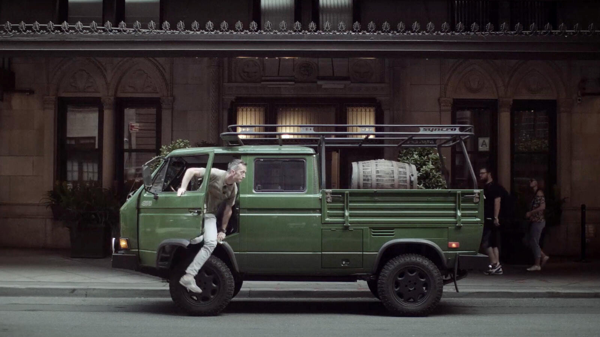
4,300 Miles: A Canlis Story
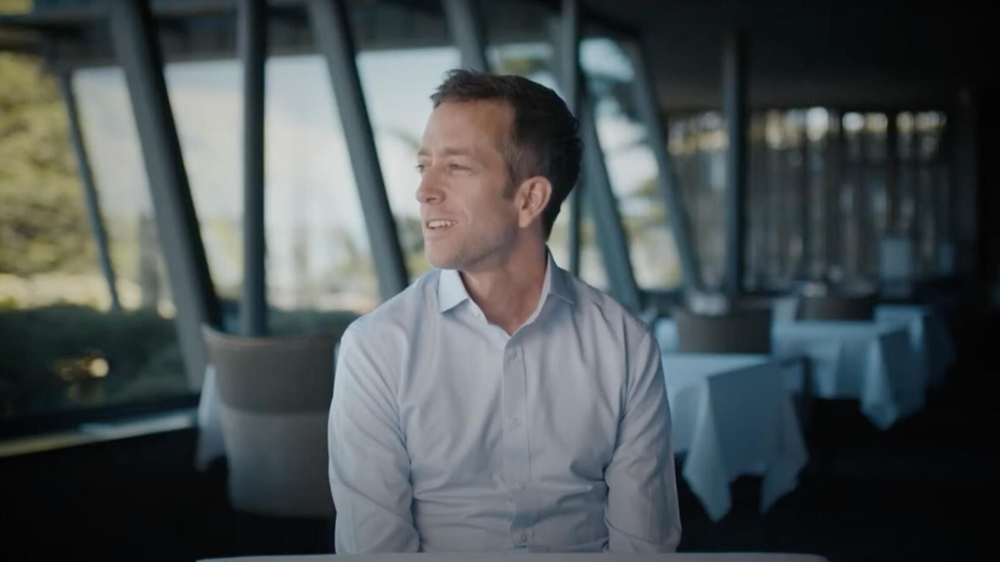
BECOMING: Helping Employees Discover Who They Want To Be

Inside Canlis Restaurant Seattle | Mark & Brian Canlis | STAUB
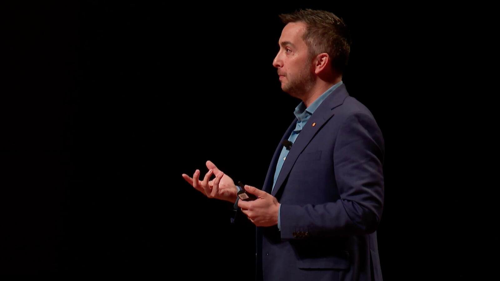
I Know Your Name - Brian Canlis (Welcome Conference 2019)
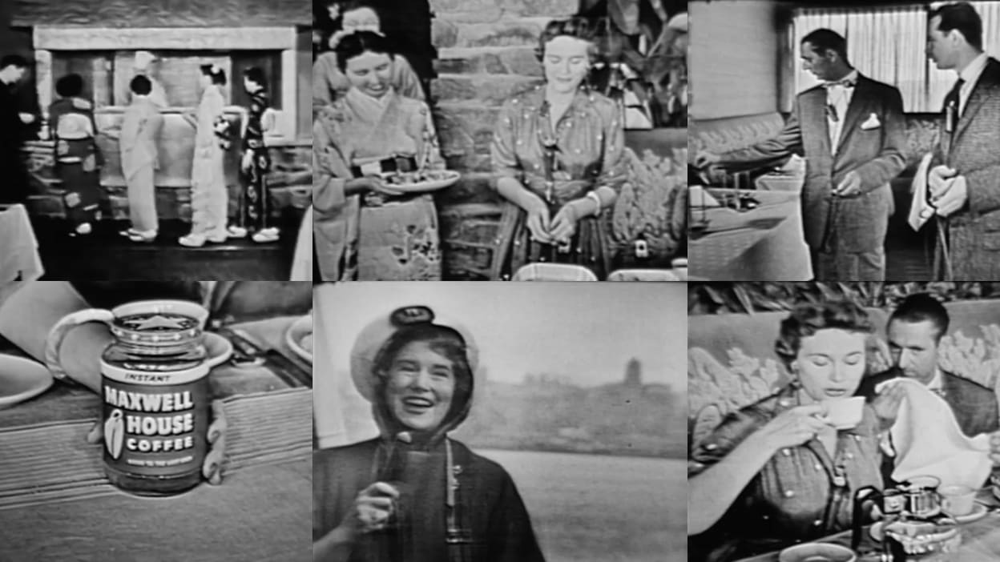
1955 NBC/KOMO National Broadcast feat. Canlis

Kenlis Party - Highlight Reel
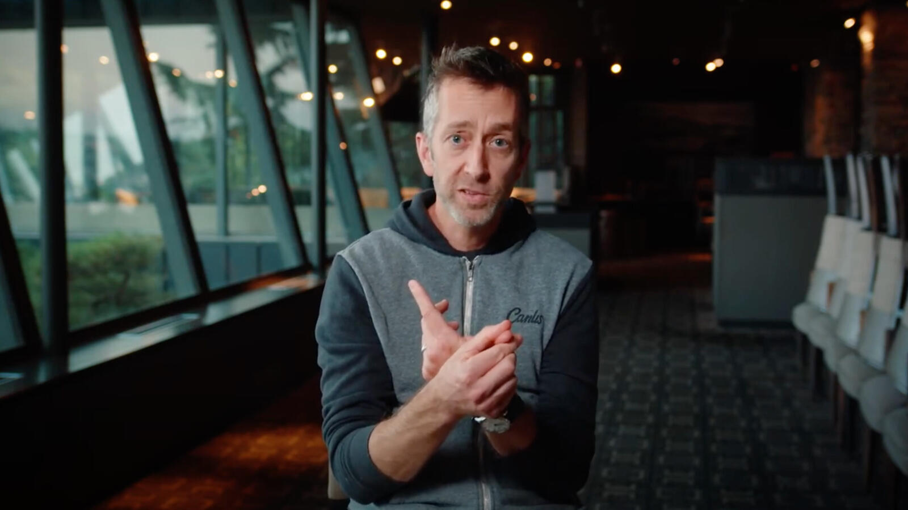
The Game's Not Up with Canlis